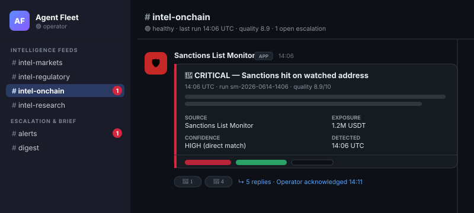
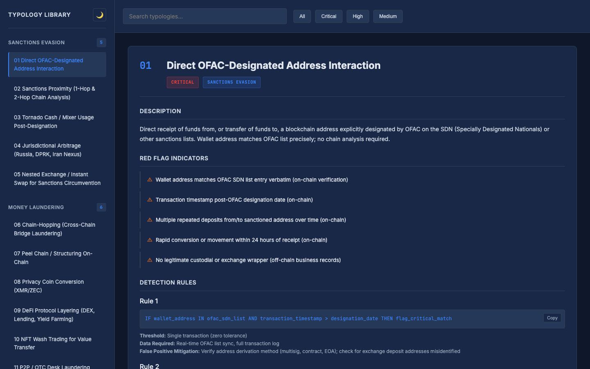
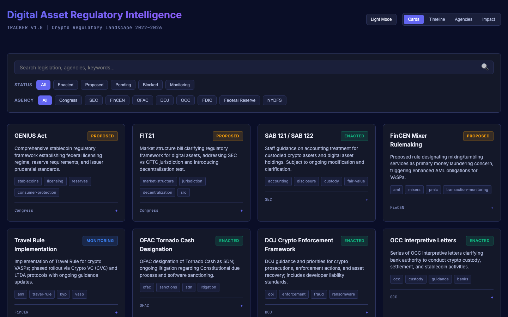

An interactive Slack-workspace mockup and companion analytical dashboards from the Claude Agent Fleet repository. Static, self-contained HTML — the visual half of an agent fleet's output stack, built with the same audit-defensible, compliance-focused discipline as the agent specs.

The operator's-eye view: channel taxonomy, Block Kit message components, alert cards, daily digests, expandable threads, and pinned canvases. Click between channels; toggle dark/light.

Fifteen crypto AML typologies with detection rules, behavioral indicators, enrichment steps, and regulatory citations.

Filterable view of the active digital-asset regulatory landscape — legislation, rulemaking, enforcement, and guidance.
All dashboards are dark-themed with a light-mode toggle. Source and positioning notes: showcase/ on GitHub.